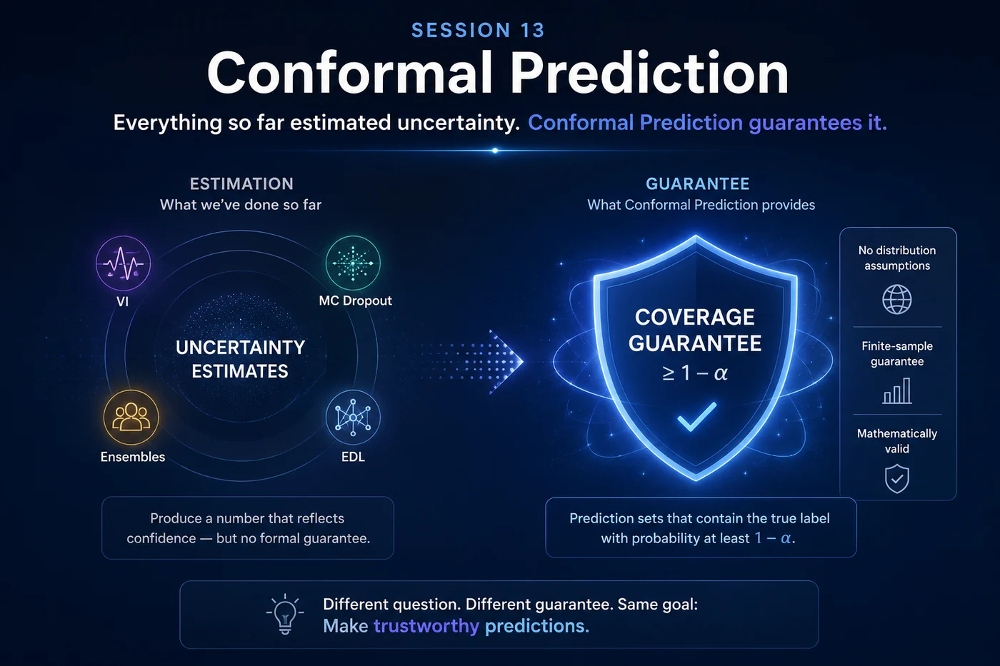
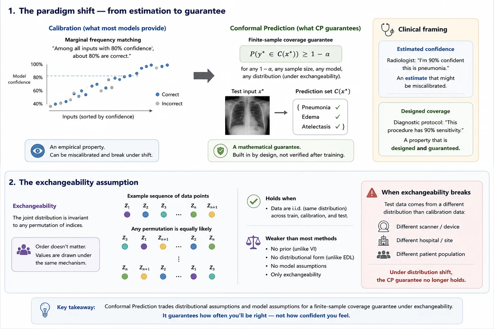
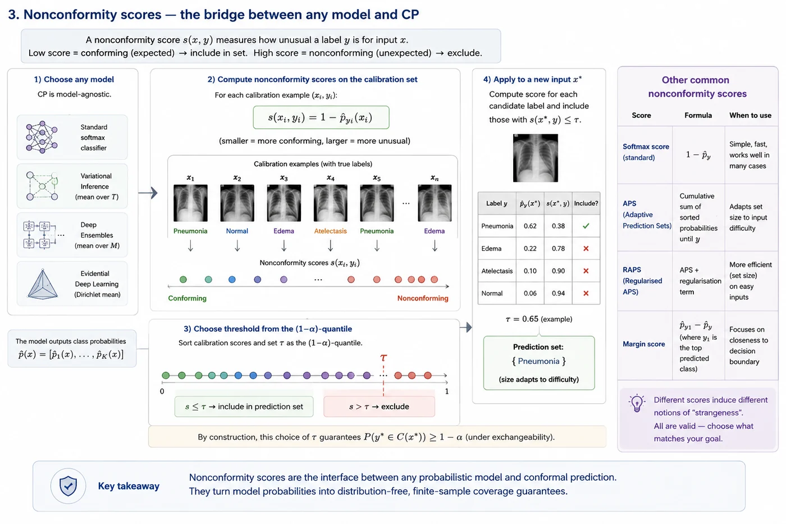
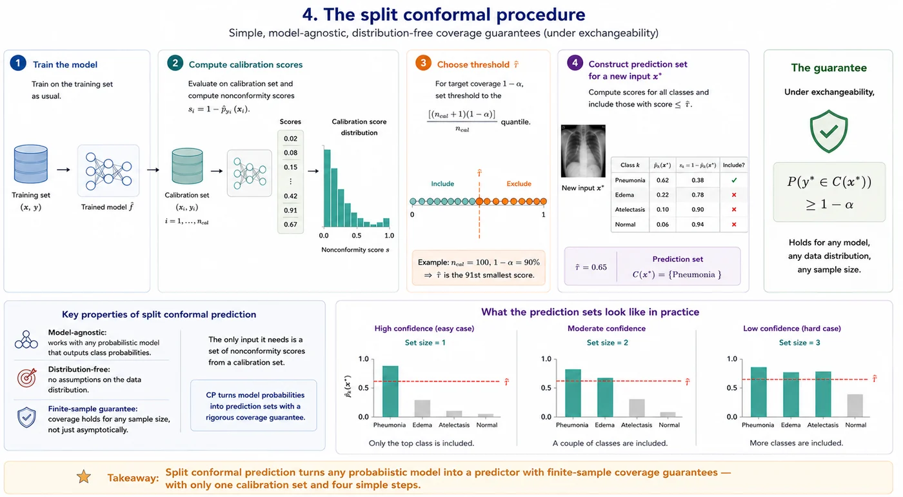
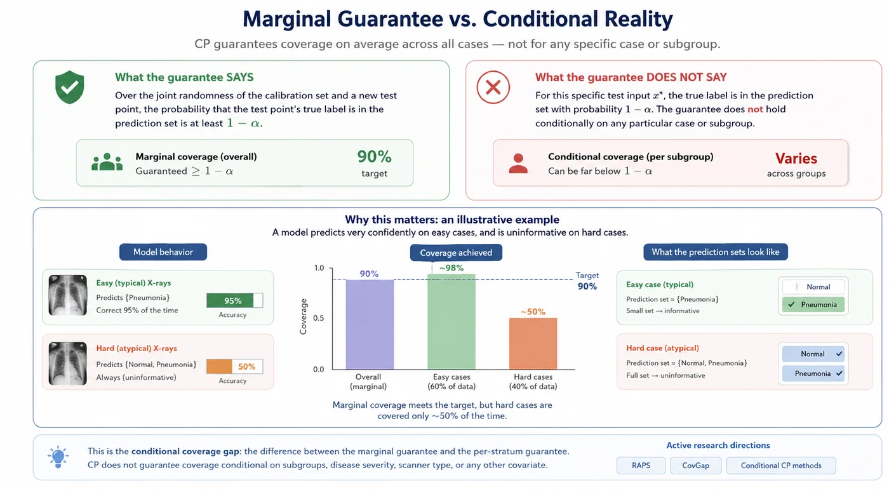

Session 13 — Conformal Prediction¶
Everything so far estimated uncertainty. Conformal Prediction guarantees it.

🔗 Bridge from Previous Sessions¶
In Sessions 5 through 12 we built four methods that estimate uncertainty. Each one produces a number — an entropy, a variance, a Dirichlet parameter — that reflects how confident the model is. These numbers are useful, but they come with no formal guarantee. A well-calibrated model is right about 80% of the time when it says 80% — but that's an empirical property, not a mathematical theorem.
Conformal Prediction begins from a completely different premise. Instead of asking how uncertain is the model?, it asks: can I construct a prediction set that is guaranteed to contain the true label with probability at least $1-\alpha$? The answer, under one mild assumption, is yes — and the guarantee is exact, finite-sample, and distribution-free.
What you'll learn in this session¶
- Why coverage guarantees are fundamentally different from calibrated probabilities
- The exchangeability assumption — the only thing CP requires of your data
- How nonconformity scores turn any black-box model into a CP-compatible scorer
- The split conformal procedure — calibration set → threshold → prediction sets
- What marginal coverage means and why it is both powerful and limited
- How to evaluate CP with efficiency and conditional coverage metrics
- Where CP fits alongside VI, MC Dropout, Ensembles, and EDL
🔄 1. The paradigm shift — from estimation to guarantee¶
To understand why CP is different, it helps to be precise about what calibration gives you and what it doesn't.
A well-calibrated model gives you marginal frequency matching: among all the inputs where the model says 80% confident, about 80% are correct. This is an average statement over the distribution of inputs. It tells you nothing about any specific input. It also doesn't hold by construction — it's an empirical property you verify after training, and it can break under distribution shift.
Conformal Prediction gives you a finite-sample coverage guarantee: a prediction set $C(x)$ satisfies
$$P(y^* \in C(x^*)) \geq 1 - \alpha$$
for any $1-\alpha$ you choose (say, 90% or 95%), for any sample size, for any model, and for any data distribution — as long as one assumption holds. This guarantee is not something you verify empirically. It is a mathematical theorem. The procedure constructs sets that satisfy it.
The difference is the difference between measuring a property and building it in by design.
🏥 Clinical framing
A radiologist saying "I'm 90% confident this is pneumonia" and a diagnostic protocol saying "this procedure has a 90% sensitivity" are different kinds of statements. The first is an estimate that might be miscalibrated. The second is a designed property of the procedure. Conformal Prediction gives AI systems the second kind of statement — not an estimated confidence, but a designed coverage rate.
🔀 2. The exchangeability assumption¶
CP requires exactly one assumption about the data: exchangeability. A sequence of random variables $(Z_1, Z_2, ..., Z_n, Z_{n+1})$ is exchangeable if the joint distribution is invariant to any permutation of the indices. In plain terms: the order doesn't matter.
For independent and identically distributed data — the most common case — exchangeability holds automatically. If your training, calibration, and test data are all drawn from the same distribution, exchangeability holds.
This is a much weaker assumption than what most uncertainty methods require. VI requires a specific prior. MC Dropout requires the Bernoulli approximation to be reasonable. EDL requires the Dirichlet framework to capture the right uncertainty. Conformal Prediction requires only that your data points are exchangeable — no distributional assumptions, no model assumptions, nothing about the architecture.
The price of this generality is that the guarantee is marginal — it holds on average over the randomness in the calibration set, not conditionally on the specific test input.
⚠️ When exchangeability breaks
In medical imaging, exchangeability breaks when test data comes from a different distribution than calibration data — a different scanner, a different hospital, a different patient population. Under distribution shift, the CP guarantee no longer holds. This is a real clinical concern and one of the active research directions in the field.

📏 3. Nonconformity scores — the bridge between any model and CP¶
CP doesn't care what model you use. It only needs a nonconformity score — a function that measures how strange or unexpected a new example is relative to the calibration data.
For classification, the most natural choice is:
$$s(x, y) = 1 - \hat{p}_y(x)$$
where $\hat{p}_y(x)$ is the model's predicted probability for the true class $y$. A low score means the model was confident in the true class — the example conforms well. A high score means the model was uncertain or wrong — the example is nonconforming.
You can use any model to compute this score:
- A standard softmax classifier
- The mean prediction from VI's T forward passes
- The ensemble mean from Deep Ensembles
- The Dirichlet mean from EDL
This is what makes CP a wrapper around any other method. The base model provides the probability estimate; CP provides the coverage guarantee on top.
Other nonconformity scores are possible and sometimes better:
| Score | Formula | When to use |
|---|---|---|
| APS (Adaptive Prediction Sets) | Cumulative sorted softmax | Adapts set size to difficulty |
| RAPS (Regularised APS) | APS + regularization | Better efficiency on easy inputs |
| Margin score | $\hat{p}_{y_1} - \hat{p}_y$ | Focuses on decision boundary |

Nonconformity scores act as a universal interface between predictive models and statistical guarantees. Regardless of whether probabilities originate from a deterministic network, Bayesian approximation, ensemble, or evidential model, CP reduces them to a single question: how unusual would it be to observe this label given what was seen during calibration?
🔧 4. The split conformal procedure¶
The most practical variant of CP is split conformal prediction (also called inductive CP). It's clean, fast, and requires only one calibration set. Here is the full procedure:
Step 1 — Train the model on the training set as usual. Nothing special here.
Step 2 — Compute calibration scores. Run the trained model on a held-out calibration set. For each calibration example $(x_i, y_i)$, compute the nonconformity score: $$s_i = 1 - \hat{p}_{y_i}(x_i)$$ This gives you a set of $n_{cal}$ scores $\{s_1, ..., s_{n_{cal}}\}$.
Step 3 — Choose the threshold $\hat{\tau}$. For a desired coverage level $1-\alpha$: $$\hat{\tau} = \text{Quantile}\left(\{s_1, ..., s_{n_{cal}}\}, \frac{\lceil (n_{cal}+1)(1-\alpha) \rceil}{n_{cal}}\right)$$ The $+1$ correction in the numerator is what gives the exact finite-sample guarantee.
Step 4 — Construct prediction sets at test time. For a new input $x^*$: $$C(x^*) = \{k : 1 - \hat{p}_k(x^*) \leq \hat{\tau}\}$$ Include any class $k$ whose nonconformity score is below the threshold.
The guarantee: under exchangeability: $$P(y^* \in C(x^*)) \geq 1 - \alpha$$
That's it. Four steps. The guarantee follows from the rank structure of exchangeable sequences — it doesn't depend on the model, the architecture, the loss function, or the data distribution.
💡 Intuition for why this works
Under exchangeability, the calibration scores and the test score are like a shuffled deck of cards. The probability that the test score is larger than the $(1-\alpha)$ fraction of calibration scores is exactly $\alpha$. So the probability that we include the true class in the prediction set is at least $1-\alpha$. The quantile threshold is just formalising this card-shuffling argument.

The threshold learned from calibration acts as a universal decision rule applied to every future example. Individual prediction sets may vary substantially in size, but collectively they achieve the desired coverage rate under the exchangeability assumption.
📊 5. What the guarantee means — and what it doesn't¶
The coverage guarantee is real and exact, but it is worth being precise about what it says.
What it says: Over the joint randomness of the calibration set and a new test point, the probability that the test point's true label is in the prediction set is at least $1-\alpha$.
What it does NOT say: For this specific test input $x^*$, the true label is in the prediction set with probability $1-\alpha$. The guarantee is marginal — it averages over all possible test inputs, not conditional on any specific one.
This distinction matters clinically. Imagine a model that always predicts a singleton set $\{Pneumonia\}$ for typical X-rays (where it is correct 95% of the time) and always outputs the full set $\{Normal, Pneumonia\}$ for unusual X-rays. The marginal coverage might be 90%, but for unusual X-rays the prediction set is always the full class set — carrying no information at all.
This is the conditional coverage gap — the difference between the marginal guarantee and the per-stratum guarantee. CP does not guarantee coverage conditionally on subgroups, disease severity, scanner type, or any other covariate. Addressing this is an active research area (see RAPS, CovGap, and conditional CP methods).

A model can satisfy the nominal conformal coverage guarantee while exhibiting substantially different behavior across easy and difficult cases. The distinction between marginal and conditional coverage highlights an important limitation of standard conformal prediction in heterogeneous datasets.
📐 6. Evaluating CP — efficiency and conditional coverage¶
Once the coverage guarantee is satisfied, the relevant question is: how useful are the prediction sets? A method that always outputs the full set of all classes trivially achieves 100% coverage — but carries no information. Evaluation focuses on two things.
6a. Efficiency — how small are the sets? 🎯¶
| Metric | What it measures |
|---|---|
| Average set size | Mean number of classes in the prediction set |
| Singleton rate | Fraction of test inputs where $|C(x^*)| = 1$ — a definitive prediction |
| Empty set rate | Fraction where $|C(x^*)| = 0$ — technically possible but uninformative |
A good CP method achieves the target coverage with small sets. On easy inputs, it should output singleton sets. On hard inputs, it should output larger sets — the size of the set is a direct measure of difficulty.
6b. Conditional coverage — does the guarantee hold per subgroup? 🏥¶
The marginal guarantee doesn't imply subgroup coverage. We check this explicitly for clinically relevant subgroups:
- Normal vs pneumonia cases
- High-confidence vs low-confidence predictions
- Different image quality bins
6c. CP vs Previous methods on the same metric 🔄¶
Conformal Prediction and the other methods are not directly comparable — they answer different questions. But they can be compared on the selective prediction framing:
- Previous methods: flag cases with entropy above a threshold and refer to radiologist
- CP: flag cases where the prediction set contains more than one class
Both produce a binary "certain" vs "uncertain" decision. CP has a formal coverage guarantee; the other methods don't.
🔁 7. CP as a wrapper¶
One of the most important practical insights about CP is that it is not a replacement for the previous methods — it is a wrapper around them. You can take the output of any other method and use it as a nonconformity score.
This means:
- A VI model → use mean prediction as softmax score → wrap in CP → get coverage guarantee
- An ensemble → use ensemble mean as softmax score → wrap in CP → get coverage guarantee
- An EDL model → use Dirichlet mean as score → wrap in CP → get coverage guarantee
The base model affects efficiency — how small the prediction sets are. A better-calibrated base model produces smaller sets because its scores are more discriminative. The coverage guarantee is independent of the base model quality.
CP doesn't estimate uncertainty in the same sense as the other methods. It takes uncertainty estimates (from any source) and wraps a formal guarantee around them.
⚠️ 8. Limitations¶
⚠️ Requires a calibration set
A held-out calibration set is required — data that is neither training data nor test data. In medical imaging with limited labelled data, this can be a real cost. The guarantee quality depends on calibration set size: small calibration sets produce wide confidence intervals around the threshold.
⚠️ Exchangeability is the right assumption for i.i.d. data — not for all deployments
If the test distribution shifts from the calibration distribution (different scanner, different population), the exchangeability assumption breaks and the coverage guarantee no longer holds. This is not unique to CP — all UQ methods suffer under distribution shift — but CP's guarantee is more visibly contingent on it.
⚠️ Prediction sets are not the same as probabilities
CP tells you which classes to include, not their relative likelihoods. A prediction set $\{$Normal, Pneumonia$\}$ for a binary problem carries no information — it's equivalent to saying "I don't know". The size of the set is informative, but not its content alone.
📚 9. Recommended reading¶
These are the core conformal prediction references to know. The first papers establish the method, the middle papers explain how to use it in practice, and the later ones cover the main modern extensions for shift and online settings. 🗺️
A Tutorial on Conformal Prediction
Vovk, Gammerman & Shafer, 2008 — JMLR
The classic tutorial and one of the most cited CP references. It gives the clean conceptual foundation for the whole field: exchangeability, nonconformity, p-values, and validity.
Algorithmic Learning in a Random World
Vovk, 2022 — Springer
The most complete book-length treatment of conformal prediction. Heavier than the tutorial, but excellent if you want the full mathematical story and the broader algorithmic learning perspective.
Conformal Prediction and Its Applications
Papadopoulos, Gammerman & Vovk, 2008 — Springer
A highly cited collection that helped popularize conformal prediction in applied machine learning. Useful for seeing the original framework used across different tasks, not just medical imaging.
A Gentle Introduction to Conformal Prediction and Distribution-Free Uncertainty Quantification
Angelopoulos & Bates, 2022
The best modern starting point. Very readable, very practical, and a natural bridge from theory to implementation. If you want one paper that explains how to actually use CP today, it is this one.
Conformal Prediction Under Covariate Shift
Tibshirani, Foygel Barber, Cand?s & Ramdas, 2019 — NeurIPS
A key extension for realistic deployment settings where the test distribution differs from the calibration distribution. This is one of the most important papers for understanding CP beyond the ideal exchangeable case.
Adaptive Conformal Inference Under Distribution Shift
Gibbs & Cand?s, 2021 — NeurIPS
A major modern extension for nonstationary environments. Important for understanding how conformal methods can be adapted when the data distribution drifts over time.
Conformal Prediction for Reliable Machine Learning: Theory, Adaptations and Applications
Balasubramanian, Vovk & Shen, 2014 — book
A broad applied reference with many examples and variants. Not as central as the tutorial, but useful if you want a more application-heavy companion.
✅ Session summary¶
| Concept | Key takeaway |
|---|---|
| 🔄 The paradigm shift | From estimating uncertainty to guaranteeing coverage. A mathematical theorem, not an empirical property |
| 🔀 Exchangeability | The only assumption — weaker than anything other methods require |
| 📏 Nonconformity scores | Bridge between any model and CP. Any other method can be wrapped |
| 🔧 Split conformal | Four steps: train → calibrate → threshold → prediction sets |
| 📊 The guarantee | $P(y^* \in C(x^*)) \geq 1-\alpha$ — exact, finite-sample, distribution-free |
| 📐 Evaluation | Efficiency (set size) + conditional coverage gap (does it hold per subgroup?) |
| 🔁 CP as wrapper | Wraps any base model. Better base model → more efficient sets, not more guaranteed coverage |
| ⚠️ Key limitations | needs calibration set, breaks under distribution shift |
➡️ Next: Session 14: Conformal Prediction Implementation
Session 14 notebook wraps a trained DenseNet121 on CXR in split conformal prediction, shows how prediction-set sizes adapt to input difficulty, and evaluates the resulting coverage and prediction sets.